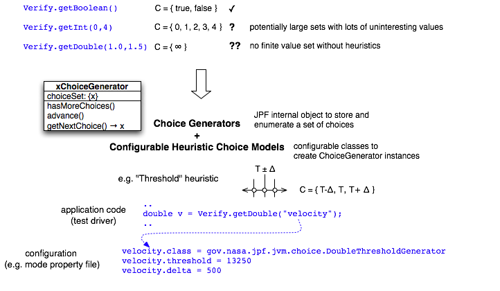
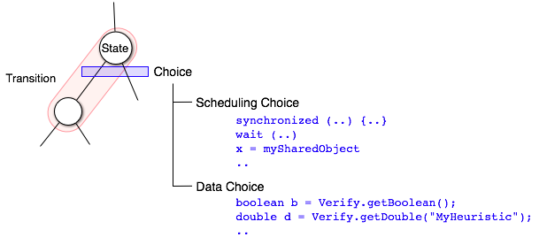
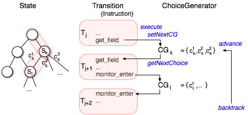
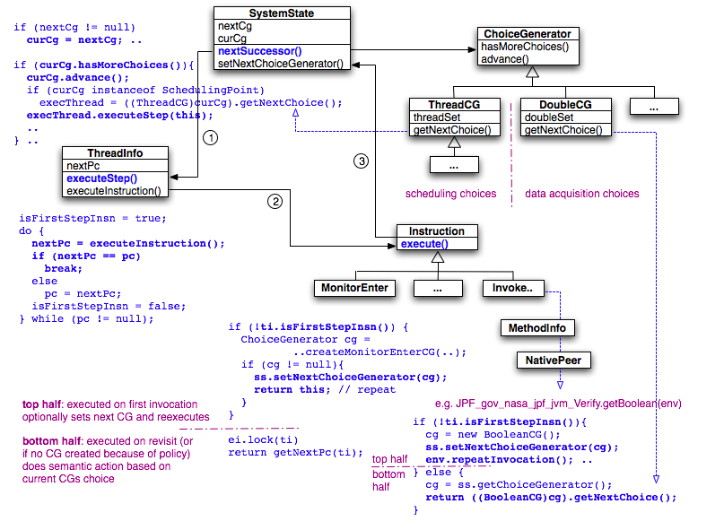

Software model checking is all about doing the right choices, to reach the interesting system states within the resource constraints of the tool and execution environment. We refer to the mechanism used by JPF to systematically explore the state space as ChoiceGenerators.
ChoiceGenerators can be approached from an application perspective, or from the JPF implementation perspective. We will do both.
While most of the choices during JPF application are related to thread scheduling, the example that obviously justifies our implementation approach is from the non-deterministic data acquisition branch. Support for "random" data acquisition (using the gov.nasa.jpf.jvm.Verify interface) has been in JPF since a long time
... boolean b = Verify.getBoolean(); // evaluated by JPF for both 'true' and 'false' ...
This worked nicely for small sets of choice values (like {true,false} for boolean), but the mechanism for enumerating all choices from a type specific interval becomes already questionable for large intervals (e.g. Verify.getInt(0,10000)), and fails completely if the data type does not allow finite choice sets at all (like floating point types):

Figure 1: ChoiceGenerator Motivation
To handle this case, we have to leave the ideal world of model checking (that considers all possible choices), and make use of what we know about the real world - we have to use heuristics to make the set of choices finite and manageable. However, heuristics are application and domain specific, and it would be a bad idea to hardcode them into the test drivers we give JPF to analyze. This leads to a number of requirements for the JPF choice mechanism:
The diagram shown above depicts this with an example that uses a "randomly" chosen velocity value of type double. As an example heuristic we use a threshold model, i.e. we want to know how the system reacts below, at, and above a certain application specific value (threshold). We reduce an infinite set of choices to only three "interesting" ones. Of course, "interesting" is quite subjective, and we probably want to play with the values (delta, threshold, or even used heuristic) efficiently, without having to rebuild the application each time we run JPF.
The code example does not mention the used ChoiceGenerator class (DoubleThresholdGenerator) at all, it just specifies a symbolic name "velocity", which JPF uses to look up an associated class name from its configuration data (initialized via property files or the command line - see Configuring JPF Runtime Options). But it doesn't stop there. Most heuristics need further parameterization (e.g. threshold, delta), and we provide that by passing the JPF configuration data into the ChoiceGenerator constructors (e.g. the 'velocity.threshold' property). Each ChoiceGenerator instance knows its symbolic name (e.g. "velocity"), and can use this name to look up whatever parameters it needs.
Having such a mechanism is nice for avoiding test driver modification. But it would be much nicer to consistently use the same mechanism not just for data acquisition choices, but also scheduling choices (i.e. functionality that is not controlled by the test application). JPF's ChoiceGenerator mechanism does just this, but in order to understand it from an implementation perspective we have to take one step back and look at JPF terminology:

Figure 2: States, Transitions and Choices
State is a snapshot of the current execution status of the application (mostly thread and heap states), plus the execution history (path) that lead to this state. Every state has a unique id number. JPF-internally, State is encapsulated in the SystemState instance (almost, there is some execution history which is just kept by the JVM object). This includes three components:
Transition is the sequence of instructions that leads from one state to the next. There is no context switch within a transition, it's all in the same thread. There can be multiple transitions leading out of one state (but not necessarily to a new state).
Choice is what starts a new transition. This can be a different thread (i.e. scheduling choice), or different "random" data value.
In other words, possible existence of Choices is what terminates the last Transition, and selection of a Choice value precludes the next Transition. The first condition corresponds to creating a new ChoiceGenerator, and letting the SystemState know about it. The second condition means to query the next choice value from this ChoiceGenerator (either internally within the JVM, or in an instruction or native method).
With this terminology, we are ready to have a look at how it all works. Let's assume we are in a Transition that executes a get_field bytecode instruction (remember, JPF executes Java bytecode), and the corresponding object that owns this field is shared between threads. For simplicity's sake, let's further assume there is no synchronization when accessing this object, (or we have turned vm.sync_detection off). Let's also assume there are other runnable threads at this point. Then we have a choice - the outcome of the execution might depend on the order in which we schedule threads, and hence access this field. There might be a data race.

Figure 3: ChoiceGenerator Sequence
Consequently, when JPF executes this get_field instruction, the gov.nasa.jpf.jvm.bytecode.GET_FIELD.execute() method does three things:
At this point, JPF ends this Transition (which is basically a loop inside ThreadInfo.executeStep()), stores a snapshot of the current State, and then starts the next Transition (let's ignore the Search and possible backtracks for a moment). The ChoiceGenerator created and registered at the end of the previous Transition becomes the new current ChoiceGenerator. Every State has exactly one current ChoiceGenerator object that is associated with it, and every Transition has exactly one choice value of this ChoiceGenerator that kicks it off. Every Transition ends in an Instruction that produces the next ChoiceGenerator.
The new Transition is started by the SystemState by setting the previously registered ChoiceGenerator as the current one, and calling its ChoiceGenerator.advance() method to position it on its next choice. Then the SystemState checks if the current ChoiceGenerator is a SchedulingPoint (just a ThreadChoiceGenerator that is meant to be used for scheduling purposes), and if it is, gets the next thread to execute from it (i.e. the SystemState itself consumes the choice). Then it starts the next Transition by calling ThreadInfo.executeStep() on it.
The ThreadInfo.executeStep() basically loops until an Instruction.execute() returns itself, i.e. has scheduled itself for reexecution with a new ChoiceGenerator. When a subsequent ThreadInfo.executeStep() reexecutes this instruction (e.g. GET_FIELD.execute()), the instruction notices that it is the first instruction in a new Transition, and hence does not have to create a ChoiceGenerator but proceeds with it's normal operations.
If there is no next instruction, or the Search determins that the state has been seen before, the VM backtracks. The SystemState is restored to the old state, and checks for not-yet-explored choices of its associated ChoiceGenerator by calling ChoiceGenerator.hasMoreChoices(). If there are more choices, it positions the ChoiceGenerator on the next one by calling ChoiceGenerator.advance(). If all choices have been processed, the system backtracks again (until it's first ChoiceGenerator is done, at which point we terminate the search).

Figure 4: ChoiceGenerator Implementation Aspects
The methods that create ChoiceGenerators have a particular structure, dividing their bodies into two parts:
The only difference between scheduling choices and data acqusition choices is that the first ones are handled internally by the JVM (more specifically: used by the SystemState to determine the next Thread to execute), and the data acqusition is handled in the bottom half of an Instruction.execute(), native method, or Listener callback method (in which case it has to acquire the current ChoiceGenerator from the SystemState, and then explicitly call ChoiceGenerator.getNextChoice() to obtain the choice value). For a real example, look at the JPF.gov_nasa_jpf_jvm_Verify.getBoolean() implementation.
As an implementation detail, creation of SchedulingPoints are delegated to a SchedulerFactory object, which encalsulates a scheduling policy by providing a consistent set of ThreadChoiceGenerators for the fixed number of instructions that are scheduling relevant (monitor_enter, synchronized method calls, Object.wait() etc.). Clients of this SchedulerFactory therefore have to be aware of that the policy object might not return a new ChoiceGenerator, in which case the client directly proceeds with the bottom half execution, and does not break the current Transition.
The standard classes and interfaces for the ChoiceGenerator mechanism can be found in package gov.nasa.jpf.jvm, and include:
Concrete implementations can be found in package gov.nasa.jpf.jvm.choice, and include classes like:
As the number of useful generic heuristics increases, we expect this package to be populated and changed.